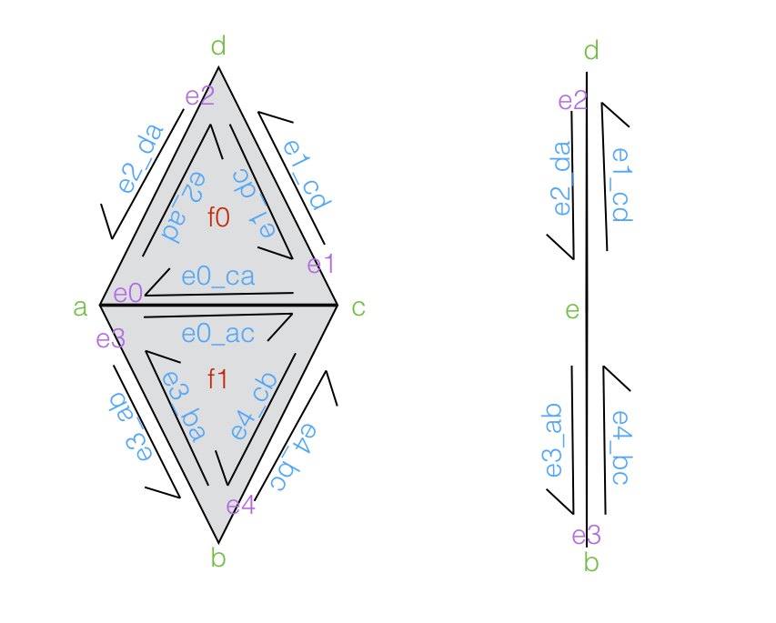

This report covers the addition of 3 major features and 1 minor feature to an existing halfedge mesh editor. The first major addition is downsampling using quadric error minimization as a heuristic. Downsampling is the process of simplifying a mesh while trying to avoid losing detail in the mesh. Quadric error measures the deviation of a vertex from its incident faces and helps guide the downsampling process. The second and third major additions relate to remeshing which is the process of regularizing the mesh to make other operations easier. The techniques implemented were uniform remeshing which regularizes all triangles but also destroys features and curvature adaptive remeshing to help preserve more of the shape of the underlying mesh. Finally, there is a small demonstration of simple feature detection based on the angle of the incident planes to avoid modifying important edges. None of the features as implemented support boundary edges but can be made to by adding cases mentioned in the references.
Downsampling basically compresses the mesh by removing less important portions of the mesh. Although there are many ways to measure importance, the way used in this case is quadric error which yields an efficient and effective solution.
The first step to being able to downsample is the ability to collapse an edge. When an edge is collapsed, it is removed from the mesh along with the incident faces and a few more components. The image below shows the exact behavior of collapsing an edge. Because this process inherently simplifies the mesh, it is perfect for downsampling.
However, one thing to consider before collapsing an edge, is whether it is a valid collapse. That is, does it preserve the manifold properties of the mesh? The conditions for an edge $(a, b)$, presented in 2 are as follows:
The function isValidCollapse handles checking for the above conditions. If those conditions pass, then collapseEdge is used to collapse the edge.
The quadric error is used to measure the deviation of point from a surface. While the full details of the computation are presented in 1 and 7, the general gist is that through the magic of linear algebra each vertex is assigned a quadric matrix. Combining the matrices of the endpoints of an edge can then be done to determine the optimal point to collapse to on the edge, and how much error that collapse would result in. This error is then used to prioritize edge collapses using a priority queue. When an edge is collapsed, the resulting vertex is positioned at the optimal point.
Once the system has the ability to collapse an edge and compute the quadric error, the algorithm is fairly straightforward. The algorithm as presented in 1 involves collapsing edges and also pairs of points that happen to be close together. The version implemented in this project does not consider points that are close together, mainly because it would require having an idea of a pseudo-edge and maintaining those within the priority queue as well. Additionally, this leads to more issues with preserving manifold properties. Otherwise, the algorithm works as presented.
Uniform remeshing attempts to clean up a mesh and make it better for other processes by pushing triangles to be roughly equilateral with uniform edge lengths and attempting to keep vertex degrees as close to 6 as possible. As the name suggests, this approach to remeshing does not consider the shapes or details of the underlying mesh when remeshing. This can make it very lossy.
Although edge flipping functionality was already developed in the mesh editor, it did not check for the validity of the flip. The function isValidFlip checks to make sure that the nicer properties of the mesh (being manifold) are presereved by the edge flip. It follows a few simple rules presented in 3. These rules for an edge $(a, b)$ are:
The algorithm first presented in 5 is fairly straightforward. First the mean edge length is calculated in order to be the threshold against which edge lengths are measured. After that edges are collapsed and split depending on length relative to the mean and edgse are flipped to bring valences closer 6. More specifically the algorithm works as follows:
Curvature adaptive remeshing works almost identically to uniform remeshing. However, instead of using the mean edge length to determine splits and collapses, a new threshold is used that makes collapses less likely when there is a greater underlying curvature. Additionally, when vertices are repositioned, a new target locaiton is used. These help to preserve the features of the mesh unlike uniform remeshing.
The sizing field is a term calculated to give a length threshold more representative of the area on the mesh. In this case it is calculated based on both the curvature at a point and a user defined tolerance to determine how far the remeshing can deviate from the existing curve. Although meshes do not inherently have any curvature, they can be treated as a linear approximation of a curved surface.
While there are a variety of curvature approximation techniques, the one implemented here is the mean curvature $H$ as described in 4. The mean curvature is calculated at a vertex.
$H = \frac{1}{4A} \sum_{i=0}^{n} ||e_i|| |{\beta}_i|$
The edges $e_i$ are the incident edges to the vertex. ${\beta}$ refers to the dihedral angle between the adjacent planes to edge $e_i$. $A$ is the barycentric area at the vertex which is simply $\frac{1}{3}$ of the sum of the areas of the incident faces. The curvature for an edge is the minimum of the curvatures for its endpoints. Once $H$ is calculated the sizing field $L$ can be found:
$L = \sqrt{\frac{6\epsilon}{H} - 3{\epsilon}^2}$
$\epsilon$ is the tolerance for the allowed deviation of the mesh from the approximate surface. $L$ is used to replace the mean edge length in the algorithm from uniform remeshing.
Whereas in the uniform version, the vertices were moved towards the centroid of their neighbors, now the vertices need to move in accordance with the curvature of the mesh. As presented in 6, the target $c$ of the vertex shift is as follows:
$c = \frac{\sum |t_j| L(b_j) b_j}{\sum |t_j| L(b_j)}$
The sums are taken over the incident triangles. $|t_j|$ is the area of triangle $j$. $b_j$ is the barycenter of the triangle $j$ and $L(b_j)$ is the sizing field at the barycenter. Everything else about the vertex movement computation remains the same.
Because the sizing field has a tolerance parameter, it requires tuning based on the scale of the mesh and the desired level of detail preserved. This can vary quite significantly, especially if the meshes are on different scales. For example, the mesh peter.dae works well with $\epsilon = 0.35$ whereas cow.dae works well with $\epsilon = 0.007$.
Feature detection can be used to further avoid destruction of features. Edges can be defined as regular edges or as feature edges depending on the angle between the incident faces. A threshold parameter is used to determine whether the angle is great enough to classify the edge as a feature. This functionality can then be used to prevent modifying edges that are crucial to the overall mesh shape as demonstrated in the images below. It is also possible to use this information to improve the adaptive remeshing by improving modification (as opposed to preventing modification) of feature edges and movement of vertices (4) but was not implemented here.
Downsampling works very effectively as can be seen from the images. Despite a 75% reducation in the number of triangles in the mesh, most of the features remain intact.
Uniform remeshing, however, has a tendency to obliterate many of the features of the mesh. That said, it is extremely effective at getting meshes that have the correct valences and roughly equilateral triangles.
Curvature adaptive remeshing manages to both preserve features and make the mesh much "nicer". Interestingly enough it can also achieve major reductions in mesh size while preserving these features. That said, downsampling still is better at feature preservation if compression is the goal.